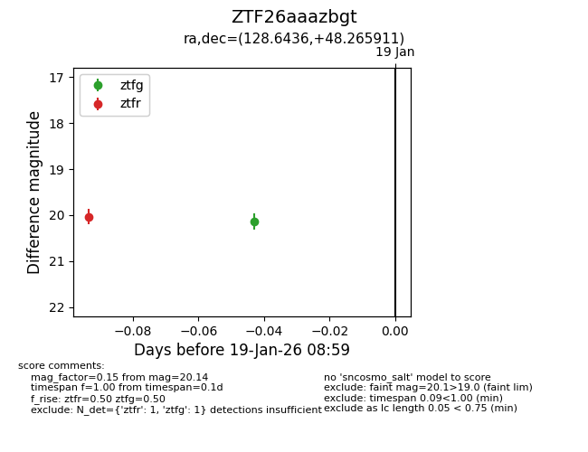
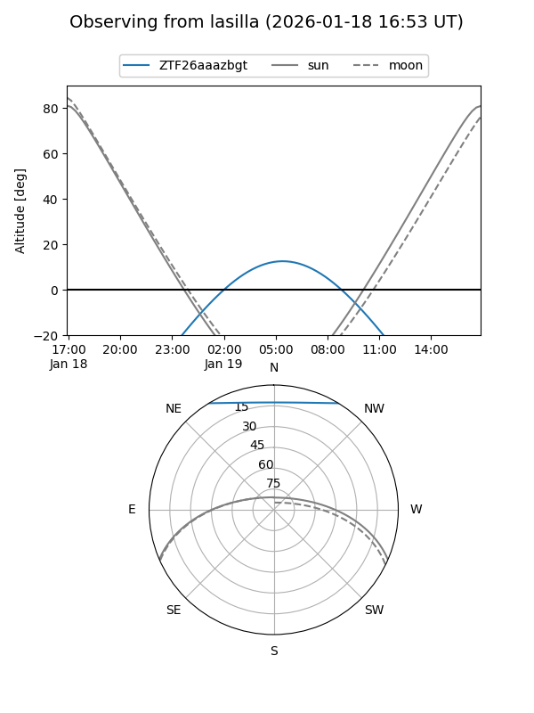
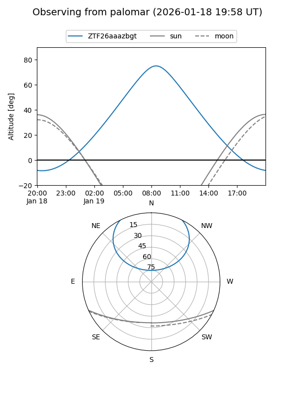

ZTF26aaazbgt
Target ZTF26aaazbgt at 2026-01-19 08:01
Aliases and brokers:
FINK: link
Lasair: link
ALeRCE: link
alt names
ZTF26aaazbgt (ztf,fink_ztf)
Coordinates:
equatorial (ra, dec) = 128.6436,+48.26591
equatorial (HMS+DMS) = 08:34:34.47,+48:15:57.28
galactic (l, b) = (171.3350,+36.72507)
Flags:
Photometry:
last ztfr=20.04
1 ztfr detections
Lightcurve

Visibility


Additional plots